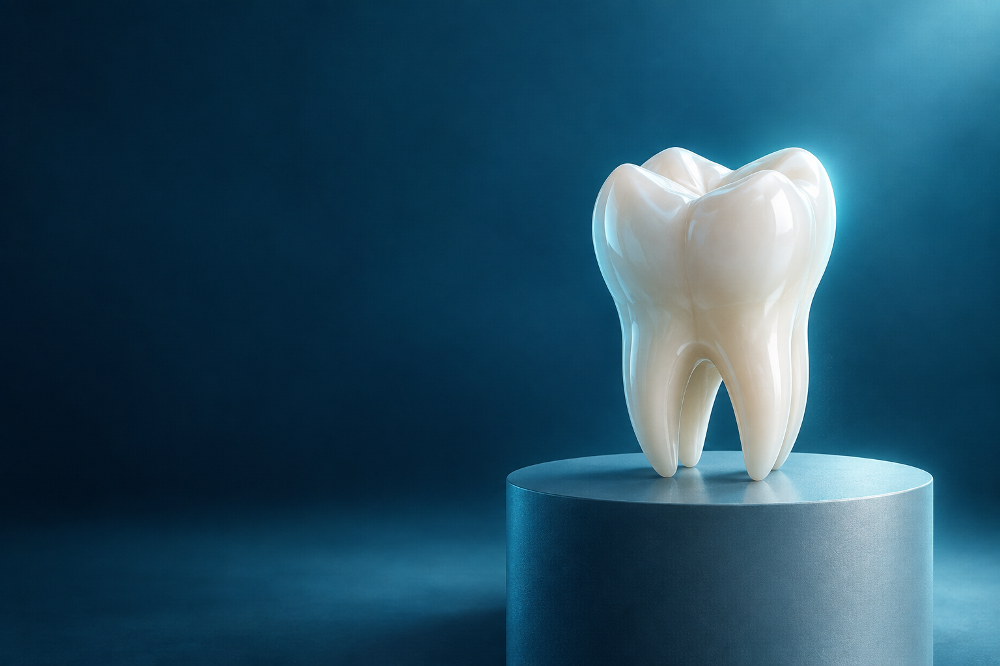
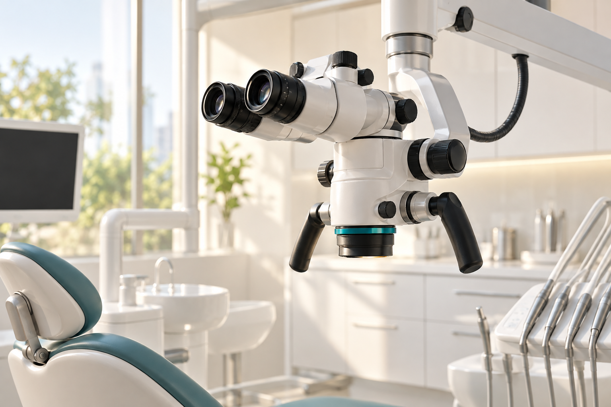

แบบ 01–10 คือชุดรอบสองที่ต่างจากต้นแบบรอบแรก (สไตล์สถาบัน/ราชการ) และ แบบ 11–20 คือชุดทันสมัยพิเศษรอบล่าสุด ออกแบบตามเทรนด์เว็บสากลปัจจุบัน — ทุกแบบมีบุคลิกชัดเจนต่างกัน พร้อมระบุวิธีสร้างจริง ใช้ธีมและปลั๊กอิน WordPress ที่มีอยู่จริง ติดตั้งได้ทันที ไม่ต้องเขียนระบบใหม่จากศูนย์
อ้างอิงต้นทาง: เว็บเดโม่รอบแรก thai-endodontic-association-demo · เว็บเก่า thailandorganizer.com/thaiendodontics — ลิงก์เอกสาร PDF ในหน้าตัวอย่างเปิดไฟล์จริงที่แนบมากับชุดนำเสนอนี้ได้
ข้อดีเชิงกลยุทธ์: เพราะทั้ง 20 แบบใช้โครงเนื้อหาชุดเดียวกัน กรรมการจึงเลือกแบบได้ไม่ต้องกลัว "ล็อกอยู่กับดีไซน์" — หากใช้ไป 1–2 ปีอยากเปลี่ยนหน้าตา ก็เปลี่ยนเฉพาะธีม/เลย์เอาต์ ข้อมูลข่าว เอกสาร และทุนวิจัยยังอยู่ครบ ไม่ต้องกรอกใหม่
ภาพลักษณ์ทันสมัยและน่าเชื่อถือแบบสถาบันการแพทย์เฉพาะทางระดับสากล ใช้ภาพฟันพอร์ซเลนบนพื้นน้ำเงินเข้ม เน้นพื้นที่ว่าง ตัวอักษรสว่าง และรายละเอียดทองอ่อน ให้ความรู้สึก "องค์กรวิชาชีพชั้นสูง" ต่างจากเว็บราชการทั่วไปอย่างชัดเจน
ศูนย์กลางองค์ความรู้ งานวิจัย และกิจกรรมวิชาการด้านเอ็นโดดอนติกส์ของประเทศไทย สำหรับทันตแพทย์ นักวิจัย และผู้รับบริการ

#0A1424 น้ำเงินคราม #2DD4BF เขียวมรกต #C9A227 ทองอ่อน #E6EEF7 ขาวนวล
หัวข้อ: Prompt SemiBold/Bold · เนื้อความ: IBM Plex Sans Thai — ตั้งค่าได้จากธีมโดยตรง ไม่ต้องแก้โค้ด
ธีม: Kadence (ฟรี) + Kadence Blocks หรือธีม Astra + Spectra ตั้ง Global Palette ตามโทนนี้ใน Customizer ได้เลย สลับโหมดสีได้ทั้งไซต์ รูปฮีโร่ใช้ไฟล์ที่เตรียมไว้แล้วในชุดนี้
●●○ ปานกลาง
5–7 วันทำงาน
เหมาะกับ: อยากได้ภาพลักษณ์ทันสมัย กระชับพรีเมียม
จัดทุกอย่างในหน้าแรกเป็น "กล่องเบนโตะ" ขนาดต่างกันตามความสำคัญ — ทุนวิจัยใหญ่ที่สุด ตามด้วยวารสาร กิจกรรม เอกสาร และ LINE ผู้ใช้เห็นภาพรวมทั้งสมาคมภายใน 3 วินาที สไตล์นี้เป็นเทรนด์เว็บสมัยใหม่ (แนวทางเดียวกับหน้าผลิตภัณฑ์ของ Apple) และสร้างด้วยบล็อกพื้นฐานของ WordPress ได้เกือบทั้งหมด
อัปเดตล่าสุด 11 กันยายน 2569
อ่านหลักเกณฑ์และดาวน์โหลดใบสมัครได้ที่คลังเอกสาร
สมัครทุนวิจัย →อ่านฉบับล่าสุด · ส่งบทความผ่าน TCI ThaiJO
เปิดวารสาร ↗#EEF1F8 เทาฟ้าอ่อน #10B981 เขียว #312E81 ม่วงคราม #06C755 เขียวไลน์ #F59E0B อำพัน
หัวข้อ: Prompt Bold · เนื้อความ: IBM Plex Sans Thai — แต่ละกล่องใช้สีประจำหมวด ช่วยจำตำแหน่ง
ธีม: Twenty Twenty-Five หรือ Kadence สร้างด้วยบล็อกแกน (Group + Columns + Cover) วาง CSS Grid เสริมเล็กน้อยผ่าน Global Styles ไม่ต้องพึ่งตัวสร้างหน้าราคาแพง
●○○ ง่าย
4–5 วันทำงาน
เหมาะกับ: สื่อสารหลายเรื่องพร้อมกัน อยากได้หน้าแรก "จบในตัว"
ดีไซน์เส้นขอบหนา เงาทึบ และตัวอักษรใหญ่ตรงไปตรงมา จุดขายคือ "อ่านไม่มีทางพลาด" — ประกาศไหนสำคัญ มันจะใหญ่และเด่นจริง ๆ เหมาะกับองค์กรที่อยากดูตรงไปตรงมา มีพลัง ไม่รกด้วยของประดับ และแยกตัวจากเว็บสมาคมทั่วไปที่หน้าตาเหมือนกันหมด
ข่าว ทุนวิจัย วารสาร และทุกแบบฟอร์มของสมาคมเอ็นโดดอนติกส์ไทย — เข้าถึงง่ายเหมือนโปสเตอร์หน้าห้อง
#101010 ดำหมึก #2545FF ครามสด #D3F26A เขียวมะนาว #FAF7F0 กระดาษ
หัวข้อ: Prompt ExtraBold ขนาดใหญ่ผิดปกติ · เนื้อความ: IBM Plex Sans Thai Medium
ธีม: Twenty Twenty-Five / GeneratePress + GenerateBlocks เสริม ขอบหนา เงาทึบ และแถบตัววิ่ง ทำด้วย CSS สั้น ๆ ใน Global Styles หรือปลั๊กอิน WPCode ทั้งหมดคือบล็อกแกนเป็นหลัก
●●○ ปานกลาง
4–6 วันทำงาน
เหมาะกับ: อยากให้เว็บ "จำได้" และแหล่งข่าวหลักของสมาชิก
วางสมาคมในฐานะ "สำนักข่าวของวงการเอ็นโดฯ" — ข่าวเด่นใหญ่พร้อมภาพ คอลัมน์ข่าวล่าสุดเรียงตามวันที่ และแถบหมวดข่าวแยกสีชัดเจน เหมาะกับสมาคมที่มีประกาศถี่ ต้องอัปเดตบ่อย และอยากให้สมาชิกเปิดเว็บเป็นกิจวัตร สร้างจากระบบข่าวพื้นฐานของ WordPress ได้โดยตรง
สมาคมเอ็นโดดอนติกส์ไทย · Thai Endodontic Association
สมาคมเอ็นโดดอนติกส์ไทยเปิดรับข้อเสนอโครงการวิจัยด้านการแพทย์รากฟัน พร้อมหลักเกณฑ์และใบสมัครฉบับปี 2569 ให้ดาวน์โหลดแล้วในคลังเอกสาร
สรุปปฏิทินรับสมัครทุน และโครงการที่ได้รับทุนปีก่อน
ฉบับล่าสุด บทความถูกอ่านมากที่สุด และคำเชิญเขียน
ปฏิทินประชุมวิชาการ สัมมนา และกิจกรรมใบรับรอง
แบบฟอร์มอัปเดตล่าสุดทั้งหมด จัดเรียงตามปี
#14181F หมึกดำ #D92D20 แดงหนังสือพิมพ์ #2563EB ทุนวิจัย #EA580C กิจกรรม
หัวข้อ: Prompt Bold · วันที่/เลเบล: Prompt Medium ตัวพิมพ์ใหญ่ เว้นระยะแบบสำนักพิมพ์
ธีม: Blocksy (ฟรี) — ธีมข่าว/นิตยสารยอดนิยม ตั้งค่าหมวดสี คอลัมน์ และความกว้างได้จาก Customizer ทั้งหมด โครงข่าวนี้คือจุดแข็งในตัวของ WordPress เอง
●○○ ง่าย
3–5 วันทำงาน
เหมาะกับ: ข่าวเยอะ อัปเดตบ่อย ทีมงานไม่เชี่ยวชาญเทคนิค
เสน่ห์อยู่ที่ความนุ่มนวลและแสงสี — พื้นหลังไล่เฉดม่วง-ฟ้า-ชมพูแบบแสงเหนือ การ์ดกระจกฝ้าโปร่งแสง และเมนูแคปซูลลอย เหมาะกับการสื่อสารว่า "วิชาการก็เข้าถึงได้ง่าย ไม่น่ากลัว" โดยเฉพาะกับกลุ่มนักศึกษาและทันตแพทย์รุ่นใหม่ ทุกเอฟเฟกต์ทำด้วย CSS ล้วน เบาและเร็ว
พื้นที่แห่งการเรียนรู้และเครือข่ายของคนเอ็นโดดอนติกส์ไทย — ข่าวสาร ทุนวิจัย วารสาร และเอกสารทุกชนิด อยู่ในที่เดียว
#F6F8FF ขาวบริสุทธิ์ #8B5CF6 ม่วง #22D3EE ฟ้า #F0ABFC ชมพู
หัวข้อ: Prompt Bold ไล่เฉดสี (gradient text) · เนื้อความ: IBM Plex Sans Thai
ธีม: Kadence + Kadence Blocks (หรือ Elementor ฟรี) พื้นหลังไล่เฉดและกระจกฝ้าทำด้วย CSS สั้น ๆ (backdrop-filter) ใส่ผ่านคลาสที่เตรียมให้ ไม่ต้องซื้อแอดดอนเสริม
●●○ ปานกลาง
5–6 วันทำงาน
เหมาะกับ: สื่อสารกับรุ่นใหม่ อยากได้เว็บ "สวยแบบนุ่มนวล"
ออกแบบหน้าแรกเหมือน "โชว์หน้าปกวารสาร" — ฉบับล่าสุดวางเด่นแบบปกหนังสือ พร้อมบทความเด่นตัวอักษรมีเชิงแบบตำรา และชั้นวางฉบับย้อนหลัง เหมาะกับช่วงที่สมาคมต้องการยกระดับชื่อเสียงวิชาการและดึงดูดบทความเข้า TEJ มากขึ้น โดยระบบวารสารเดิมบน ThaiJO ยังใช้ต่อได้ทั้งหมด
ทุกฉบับที่ออกไป ทีมกองบรรณาธิการได้เห็นคำถามเดียวกันจากผู้เขียนมากมาย — บทความแบบไหนจึงได้รับการตีพิมพ์ คำตอบสั้น ๆ คือ คำถามวิจัยที่ชัด วิธีการที่ทำซ้ำได้ และการอ่านต้นฉบับอย่างจริงจัง เรารวมแนวทางทั้งหมดไว้ในหลักเกณฑ์การสนับสนุนบทความฉบับล่าสุดของสมาคม พร้อมแบบฟอร์มขอรับเงินสนับสนุนที่ปรับปรุงใหม่
หน้านี้รวมทุกอย่างที่ผู้เขียนต้องรู้ ตั้งแต่หลักเกณฑ์ แบบฟอร์ม ไปจนถึงทางเข้าระบบส่งบทความจริงบน TCI ThaiJO โดยไม่ต้องโหลดไฟล์ซ้ำจากหลายที่เหมือนเมื่อก่อน
#F6F0E4 กระดาษครีม #26221C หมึกดำ #7C1D3F แดงเลือดหมู #C9BDA1 ทรายทอง
หัวข้อ/ปก: Chonburi / Noto Serif Thai (มีเชิง) · เนื้อความ: IBM Plex Sans Thai — ฟอนต์ไทยมีเชิงให้บรรยากาศตำราแพทย์คลาสสิก
ธีม: Kadence หรือ Blocksy + CPT "ฉบับวารสาร" (ปก, เลขฉบับ, ลิงก์ ThaiJO) ปกเป็นรูปอัปโหลดผ่าน WordPress ปกติ โซนบทความเด่นใช้บล็อกแกน + ฟอนต์มีเชิงจาก Google Fonts
●●○ ปานกลาง
5 วันทำงาน
เหมาะกับ: ยกระดับชื่อเสียงวิชาการ เก็บบทความเข้า TEJ ให้มากขึ้น
ช่วงก่อนประชุมใหญ่ คนเข้าเว็บเพื่ออย่างเดียวคือ "งาน" — แบบนี้จึงเปิดด้วยนามบัตรงาน Endodontic Uncovered นับถอยหลัง ตารางวิชาการแยกช่วงเช้า/บ่าย ปุ่มลงทะเบียนติดไว้ทุกจุด และเก็บข่าวสมาคมทั่วไปไว้ลำดับรอง เมื่องานจบแล้วหน้านี้คือคลังสไลด์และภาพย้อนหลังของงานนั้น
Resolving Clinical Dilemmas Across Specialties — ประชุมวิชาการประจำปีของสมาคมเอ็นโดดอนติกส์ไทย ร่วมไขข้อข้องใจกรณีคลินิกข้ามสาขา พร้อมหน่วยความรู้ผ่านระบบ CDEC
#0D1633 ครามเข้ม #6366F1 ม่วงครามสด #FBBF24 เหลืองทอง #E8ECFA ขาวฟ้า
หัวข้อ: Prompt ExtraBold · ตารางเวลา: Prompt SemiBold + ตัวเลขเด่น
ธีม: Astra หรือ Blocksy + The Events Calendar (ปลั๊กอินจัดกิจกรรมอันดับหนึ่ง ฟรี) นาฬิกานับถอยหลังใช้บล็อก Countdown ของ Kadence Blocks หน้าลงทะเบียนใช้ WPForms พร้อมอีเมลยืนยันอัตโนมัติ
●●● ยากสุดในชุด
7–10 วันทำงาน
เหมาะกับ: ปีที่มีงานใหญ่ อยากให้เว็บเป็นแผนกลงทะเบียนของงาน
เว็บสมาคมส่วนใหญ่จัดตามโครงสร้างองค์กร แต่ผู้มาใหม่นึกไม่ออกว่า "งาน" อยู่หมวดไหน — แบบนี้จึงเริ่มด้วยชิป "ฉันต้องการ…" ให้เลือกงานที่ทำ แล้วพาเดินเป็นขั้น ๆ (อ่านหลักเกณฑ์ → เตรียมแบบฟอร์ม → ส่ง/ติดต่อ) ทุกเส้นทางมีเอกสารจริงและช่องทางช่วยเหลือครบ ช่วยลดโทรศัพท์เข้าเจ้าหน้าที่อย่างเห็นผล
เลือกงานที่ต้องการ เราพาไปทีละขั้น พร้อมเอกสารที่ถูกต้องของปีนั้น ๆ
เจ้าหน้าที่สมาคมตอบในเวลาทำการ จันทร์–ศุกร์
#F6FAF8 ขาวมิ้นต์ #0F766E เขียวทีล #14B8A6 เขียวสด #06C755 เขียวไลน์
หัวข้อ: Prompt Bold · เนื้อความ: IBM Plex Sans Thai — ใช้สีเดียวเป็นหลัก เน้นความชัดเจน ไม่แข่งกันเอง
ธีม: Kadence + Kadence Blocks ชิป "ฉันต้องการ" คือปุ่มลิงก์แองเกอร์ไปยังเส้นทางในหน้าเดียวกัน เส้นทางเป็นหน้าลูกแยกปี เชื่อม PDF จากคลังเอกสาร ต่อยอดระบบสมาชิกภายหลังได้ด้วย Ultimate Member
●○○ ง่าย
4–6 วันทำงาน
เหมาะกับ: ต้องการใช้งานจริง ลดโทรศัพท์เข้าเจ้าหน้าที่ — คำแนะนำอันดับต้น
สถิติจริงของเว็บสมาคมส่วนใหญ่คือ 70–80% เข้าจากมือถือ — แบบนี้จึงออกแบบจากหน้าจอโทรศัพท์ก่อน ข่าวเป็นฟีดการ์ดเลื่อนได้ มีวงกลม "ประเด็นด่วน" แบบสตอรี่ แถบเมนูล่างคล้ายแอป และปุ่ม LINE ลอยตลอดเวลา ติดตั้งลงหน้าจอโทรศัพท์เป็นแอปได้ (PWA) โดยไม่ต้องผ่านสโตร์
เปิดด้วยฟีดข่าวเลื่อนได้ทันที ประเด็นด่วนอยู่บนสุดแบบสตอรี่ และแตะ LINE เพื่อคุยกับเจ้าหน้าที่ได้จากทุกหน้า — สมาชิกเพิ่มลงหน้าจอโทรศัพท์เป็น "แอป TEA" ได้ในคลิกเดียว
#F7FAF9 ขาวเขียวจาง #0E9F6E เขียวแอป #06C755 เขียวไลน์ #0D1512 เข้มขอบเครื่อง
หัวข้อ: Prompt SemiBold ขนาดอ่านบนมือถือ · เนื้อความ: IBM Plex Sans Thai
ธีม: Blocksy (mobile-first, ฟรี) + เมนูล่างทำด้วย CSS/Kadence ปุ่ม LINE ใช้ปลั๊กอิน Joinchat (ฟรี ทำเพื่อ LINE โดยเฉพาะ) และ Super Progressive Web Apps สำหรับติดตั้งเป็นแอป + แจ้งเตือน
●●○ ปานกลาง
5–7 วันทำงาน
เหมาะกับ: สมาชิกที่สื่อสารผ่านมือถือ/LINE เป็นหลัก
บุคลิก "ห้องหอจดหมายเหตุ" โทนหมึกดำ-ทอง-งาช้าง ตัวอักษรมีเชิง เปิดด้วยเส้นทางประวัติสมาคมแบบไทม์ไลน์ คลังภาพกิจกรรมย้อนหลัง และเกียรติคุณของผู้ร่วมก่อตั้ง เหมาะกับองค์กรที่อยากสื่อ "ความต่อเนื่องและความน่าเชื่อถือระยะยาว" โดยเฉพาะปีที่มีงานครบรอบหรือโอนย้ายผู้บริหารรุ่นใหม่
สมาคมเอ็นโดดอนติกส์ไทย รวมคณะผู้เชี่ยวชาญเพื่อพัฒนาวิชาการ สนับสนุนงานวิจัย และยกระดับการรักษา — เส้นทางทุกยุคถูกเก็บไว้เป็นหลักฐานและแรงบันดาลใจของรุ่นถัดไป
#171310 หมึกน้ำตาลเข้ม #C9A227 ทองเก่า #EFE8D8 งาช้าง #A89D82 เทาทราย
หัวข้อ: Noto Serif Thai (มีเชิง หนักแน่น) · เนื้อความ: IBM Plex Sans Thai — ตราสัญลักษณ์วงแหวนทองสื่อความต่อเนื่อง
ธีม: Kadence หรือ Blocksy ไทม์ไลน์ใช้บล็อก Timeline ของ Kadence Blocks หรือปลั๊กอิน Timeline Blocks (ฟรี) หอภาพใช้แกลเลอรีแกนของ WordPress + กล่องไฟ Lightbox ทั้งหมดไม่ต้องเขียนโค้ด
●●○ ปานกลาง
5–7 วันทำงาน
เหมาะกับ: เน้นความต่อเนื่อง เกียรติประวัติ และปีครบรอบ
แนวทางเดียวกับเว็บสตาร์ทอัพเทคโนโลยีระดับโลก (สไตล์ Linear / Vercel) — พื้นดำอมน้ำเงินมีเส้นกริดจาง ๆ การ์ดขอบเรืองแสงไล่เฉด ข้อความไล่สี และชิปสถานะเขียว "เปิดรับอยู่" ให้สมาคมดูโมเดิร์นแบบองค์กรนวัตกรรม ต่างจากแบบ 01 ตรงที่เป็นเทค-พรีซิสชัดเจน ไม่ใช่คลินิกหรู
ข่าวสาร ทุนวิจัย วารสาร และเอกสารทุกชนิด อยู่ในที่เดียว ออกแบบให้ใช้งานง่ายเหมือนผลิตภัณฑ์เทคโนโลยี ไม่ใช่เว็บราชการ
#05070D ดำน้ำเงิน #6366F1 อินดิโก #22D3EE ฟ้านีออน #4ADE80 จุดสถานะ
หัวข้อ: Prompt ExtraBold + ข้อความไล่สี · เนื้อความ: IBM Plex Sans Thai
ธีม: Blocksy หรือ Kadence ตั้งสี Global เป็นโทนดำ + ใส่ CSS ขอบไล่เฉดและกริดพื้นหลังสั้น ๆ ที่เตรียมให้ ทุกเอฟเฟกต์เป็น CSS ล้วน เร็วและไม่ต้องพึ่งปลั๊กอินเสริม
●●○ ปานกลาง
5–6 วันทำงาน
เหมาะกับ: ภาพลักษณ์นวัตกรรม ทันสมัยที่สุดในชุดนี้
เทรนด์ดีไซน์ที่กำลังมาแรง: ปุ่มและการ์ดหนานุ่มเหมือนดินน้ำมัน มุมโค้งมาก เงาชั้นใน-ชั้นนอกซ้อนกัน และไอคอนวงกลมพองตัว ให้ความรู้สึกเป็นมิตรและทันสมัยไปพร้อมกัน เหมาะกับการทำให้เว็บวิชาการดู "อบอุ่น เข้าถึงได้ง่าย" โดยเฉพาะกับนักศึกษาและประชาชนทั่วไป
ข่าวสมาคม ทุนวิจัย วารสาร และเอกสารทุกใบ จัดอย่างเป็นระเบียบกดถึงได้ในไม่กี่คลิก สำหรับทันตแพทย์ นักวิจัย และทุกคนที่สนใจ
#E9F0FA ฟ้านวลนุ่ม #8B5CF6 ม่วงดินเหนียว #BFDBFE ฟ้าอ่อน #DDD6FE ลาเวนเดอร์
หัวข้อ: Prompt Bold · เนื้อความ: IBM Plex Sans Thai — เงาซ้อนชั้นใน/ชั้นนอกคือเอกลักษณ์ของสไตล์นี้
ธีม: Kadence + Kadence Blocks ใส่ CSS เงาดินน้ำมัน (เตรียมให้ครบเป็นคลาสพร้อมใช้) กับการ์ด/ปุ่ม ทุกบล็อกใช้ของแกน WordPress กับ Kadence เท่านั้น
●●○ ปานกลาง
4–6 วันทำงาน
เหมาะกับ: อยากได้เว็บที่ "สดใสแต่ทันสมัย" ไม่จำเจ
ยกระดับเว็บให้เป็น "แดชบอร์ด" แบบแอปธุรกิจยุคใหม่ — เมนูข้าง การ์ดสรุปสถานะ กราฟประกาศรายเดือน และฟีดกิจกรรมล่าสุด เหมาะกับสมาคมที่ต้องการสื่อความเป็นองค์กรขับเคลื่อนด้วยข้อมูล และมีสมาชิกที่กลับมาใช้งานเป็นประจำ นี่คือรูปแบบที่ "ทันสมัยแบบใช้งานจริง" ที่สุด
#101828 สเลตเข้ม #2563EB น้ำเงินแอป #22D3EE ฟ้าสว่าง #F1F4F9 เทาอมฟ้า
หัวข้อ: Prompt SemiBold · ตัวเลข/ป้าย: Prompt ตัวเล็กตัวพิมพ์ใหญ่ แบบแดชบอร์ด SaaS
ธีม: Blocksy + ปลั๊กอิน Visualizer หรือ wpDataTables (ฟรี) สำหรับกราฟจากข้อมูลจริง การ์ดสรุปใช้ Query Loop + CSS โครงเมนูข้างทำด้วย Kadence ไม่ต้องเขียนระบบแดชบอร์ดเอง
●●● ยาก
7–9 วันทำงาน
เหมาะกับ: สมาคมที่มีข้อมูลสรุปและสมาชิกใช้ประจำ
รูปแบบที่ทันสมัยที่สุดเชิงบริการ: หน้าแรกคือหน้าต่างแชท "ถามสมาคมได้เลย" — ผู้ใช้พิมพ์ว่า "มีทุนวิจัยไหม" ระบบตอบพร้อมลิงก์เอกสารที่ถูกต้องทันที โดยตอบจากฐานความรู้เอกสารของสมาคม และโอนต่อให้เจ้าหน้าที่ผ่าน LINE ได้เมื่อคำถามเกินขอบเขต ช่วยลดงานตอบซ้ำ ๆ ของเจ้าหน้าที่อย่างเห็นผล
ผู้ช่วย TEA ตอบจากประกาศและเอกสารจริงของสมาคม พร้อมลิงก์ดาวน์โหลดที่ถูกต้องเสมอ
#F0FAF7 ขาวมิ้นต์ #0F766E เขียวทีล #14B8A6 เขียวสด #EEF6F4 ฟองนม
หัวข้อ: Prompt Bold · ข้อความแชท: IBM Plex Sans Thai — ฟองแชทโค้งมนแบบแอปแชทจริง
ธีม: Kadence + ปลั๊กอิน AI ChatBot (ฟรี) หรือฝังบริการแชทบอทพร้อมใช้ (Chatbase / Botpress — สคริปต์เดียวจบ) ฐานความรู้คือ PDF ประกาศของสมาคม และ Joinchat เป็นทางถึงเจ้าหน้าที่จริง
●●○ ปานกลาง
6–8 วันทำงาน
เหมาะกับ: ต้องการความทันสมัยระดับ "ผลิตภัณฑ์ AI" + ลดงานตอบซ้ำ
ไม่มีการ์ด ไม่มีเงา ไม่มีของประดับ — มีแค่ตัวอักษรใหญ่ที่จัดวางอย่างแม่นยำ เส้นบาง ๆ คั่น และสีเขียวเข้มจุดเดียวเป็นพระเอก สไตล์ "quiet luxury" ของแบรนด์ระดับพรีเมียม ให้สมาคมดูสุขุม มั่นใจ และจริงจังกับตัวหนังสือ (เหมาะกับองค์กรที่เชื่อว่าเนื้อหาคือทุกอย่าง)
สมาคมเอ็นโดดอนติกส์ไทย รวมผู้เชี่ยวชาญเพื่อพัฒนาวิชาการ สนับสนุนงานวิจัย และยกระดับมาตรฐานการแพทย์รากฟันของประเทศ เราเชื่อว่าเนื้อหาที่ดีไม่ต้องการของประดับ
#FBFBF9 ขาวกระดาษ #121412 ดำหมึก #0C3B2E เขียวป่าเข้ม #D9D9D2 เส้นบาง
หัวข้อ: Prompt Bold ขนาดใหญ่มาก ระยะบีบ · เนื้อความ: IBM Plex Sans Thai — ใช้เส้น 1px แทนกล่องทั้งหมด
ธีม: GeneratePress + GenerateBlocks — คู่นี้เบาที่สุดในตลาด เหมาะกับสไตล์มินิมอลพอดี ตั้งฟอนต์หัวข้อใหญ่และเส้นคั่นจาก Customizer ได้เกือบทั้งหมด
●○○ ง่าย
3–5 วันทำงาน
เหมาะกับ: ภาพลักษณ์สุขุมพรีเมียม + เว็บเร็วที่สุดในชุด
พลังของสีล้วน ๆ แบบสตูดิโอเอเจนซีชั้นนำ — บล็อกสีม่วง-ส้มปะทะกัน รูปถ่ายแปลงเป็นโทนดูโอโทนให้เข้าชุดกันทั้งหน้า และป้ายขอบดำแบบสติกเกอร์ เหมาะกับการสื่อสารว่าสมาคมนี้มีชีวิตชีวา มีพลัง และ "กล้าต่าง" จากเว็บวิชาการทั่วไปอย่างชัดเจนที่สุดในชุดนี้
ข่าว ทุนวิจัย วารสาร และเอกสาร ของสมาคมเอ็นโดดอนติกส์ไทย — จัดเต็ม ชัดเจน ไม่ต้องค้นนาน
ดูสิ่งที่กำลังเปิดรับ →#5B21B6 ม่วงเข้ม #FF5A3C ส้มแดง #FFC9A3 พีช #FFF4E6 ครีม
หัวข้อ: Prompt ExtraBold · รูปถ่าย: ฟิลเตอร์ดูโอโทน CSS (ขาว-ดำ + เบลนด์สีพื้น) ให้ทุกรูปเข้าโทนโดยไม่ต้องแต่งรูปใหม่
ธีม: Kadence หรือ Blocksy + ฟิลเตอร์ดูโอโทนเป็น CSS สั้น ๆ (grayscale + mix-blend-mode) ใส่กับรูปทุกรูปผ่านคลาสเดียว บล็อกสีใช้ Cover/Group ของแกน WordPress
●●○ ปานกลาง
5 วันทำงาน
เหมาะกับ: อยากให้เว็บมีพลัง จำได้ และต่างจากใคร ๆ
เปลี่ยนการเลื่อนหน้าให้เป็นการ "อ่านนิทานเรื่องใหญ่" — แต่ละบท (ประวัติ → งานวิจัย → กิจกรรม → บริการ) กินพื้นจอเต็ม มีแถบบทด้านซ้ายบอกว่าอ่านถึงไหน ภาพประกอบสลับขึ้นตามจังหวะการเลื่อน ผู้ชมเข้าใจภาพรวมของสมาคมได้โดยแค่ปล่อยเมาส์เลื่อน สไตล์ที่แบรนด์ระดับโลกใช้เล่าเรื่องและรายงานประจำปี
ทุนอุดหนุนการวิจัยประจำปีของสมาคม พร้อมหลักเกณฑ์ที่อ่านเข้าใจง่ายและแบบฟอร์มฉบับถูกปี — ส่วนนี้พาไปทีละขั้นจนถึงการส่ง
ดูทุนวิจัยปี 2569 →
#101418 ถ่านดำ #FF6B4A เขม่าส้ม #9AA7B5 เทาเมฆ #1A2027 กราไฟต์
หัวข้อ: Prompt ExtraBold · เลเบลบท: Prompt + ตัวพิมพ์ใหญ่เว้นระยะ แบบไทเทิลภาพยนตร์
ธีม: Astra/Kadence + Elementor ฟรี (motion effects) หรือปลั๊กอิน Scrollsequence ทำฉากตามการเลื่อน แถบบทใช้ CSS sticky ที่เตรียมให้ ไม่ต้องเขียน JavaScript เอง
●●● ยาก
7–9 วันทำงาน
เหมาะกับ: การนำเสนอที่ต้อง "ว้าว" และเล่าเรื่ององค์กร
ยืมภาษาภาพจาก App Store และ Netflix: สิ่งที่กำลังเกิดขึ้นกับสมาคมถูกวางเป็น "ไพ่" ใบใหญ่เรียงซ้อนเลื่อนข้างได้ การ์ดใบเด่นสีเข้มขนาดใหญ่กว่าใคร ใบถัด ๆ ไปส่องขอบไว้ชวนเลื่อนต่อ ดูสนุก ทันสมัย และเหมาะกับเนื้อหาที่มีตัวยกใหม่บ่อย ๆ
อ่านหลักเกณฑ์และเตรียมใบสมัครจากไฟล์ฉบับปีนี้
เปิดดู →ส่งผ่านระบบ TCI ThaiJO ฟรีตลอดปี พร้อมแนวทางการสนับสนุนค่าตีพิมพ์
เปิดดู →10 ก.ค. 2569 · จุฬาฯ — ลงทะเบียนและดูหัวข้อวิชาการ
เปิดดู →รวมทุกใบที่อัปเดตล่าสุด จัดตามหมวด โหลดได้ทันที
เปิดดู →#EAF4FD ฟ้าลม #075985 น้ำเงินลึก #0EA5E9 ฟ้าสด #FFFFFF การ์ดขาว
หัวข้อ: Prompt Bold · ป้ายหมวด: Prompt ตัวพิมพ์ใหญ่ — การ์ดเด่นพื้นเข้ม 1 ใบ ที่เหลือขาว
ธีม: Kadence + Kadence Blocks (Advanced Slider) หรือ Stackable carousel — ทั้งหมดลากวางได้ ดึงโพสต์ล่าสุดเข้าการ์ดอัตโนมัติด้วย Dynamic Content
●●○ ปานกลาง
5–6 วันทำงาน
เหมาะกับ: ข่าว/กิจกรรมใหม่บ่อย อยากให้หน้าแรกมีชีวิต
ดีไซน์ "เอกสารกำกับทางเทคนิค" ที่กำลังมาแรงในงานดีไซน์สายเวิร์ก — พื้นกริดกราฟกระดาษวิศวกรรม เส้นขอบหนามุมตรง ตัวอักษรโมโนสเปซกำกับทุกหัวข้อ และตารางสเปกบริการ ให้ความรู้สึกแม่นยำ ตรวจสอบได้ และเป็นวิชาการอย่างมีสไตล์ เหมาะกับองค์กรที่ภาพจำคือ "ความแม่นยำ"
สมาคมเอ็นโดดอนติกส์ไทย จัดระบบวิชาการ ทุนวิจัย และเอกสารทุกฉบับไว้เป็นหมวดหมู่ชัดเจน อ้างอิงได้ว่าเป็นฉบับใด ปีใด ปรับปรุงเมื่อใด
#F2F6F5 ขาวเขียวจาง #15342C เขียวหมึก #0F766E เขียวทีล #C9D8D2 เส้นกริด
หัวข้อ: Prompt Bold · ป้ายกำกับ: ฟอนต์โมโนสเปซ (Consolas/Mono) ทุกจุด — คู่ตัวอักษรที่สื่อ "สเปกทางเทคนิค"
ธีม: GeneratePress + GenerateBlocks กริดพื้นหลังเป็น CSS สองบรรทัด ฟอนต์โมโนเป็นฟอนต์ระบบ (ไม่ต้องโหลดเพิ่ม) ตารางสเปกใช้บล็อกตารางแกนของ WordPress
●●○ ปานกลาง
5 วันทำงาน
เหมาะกับ: ภาพลักษณ์แม่นยำ เป็นระบบ มีเอกลักษณ์
โครงหน้าแบบครึ่งจอซ้าย-ขวาที่เว็บพอร์ตโฟลิโอระดับรางวัลนิยมใช้: ครึ่งซ้ายคำพูดสำคัญบนพื้นดำ ครึ่งขวาภาพจริงเต็มสูง พร้อมการ์ดลอยสรุปข้อมูล ส่วนถัดไปสลับบล็อกสี ทำให้ทุกหน้าจอดู "ตั้งใจจัดวาง" ตั้งแต่วินาทีแรก สร้างง่าย ดูแลง่าย และดูดีทั้งจอใหญ่และจอเล็ก
แหล่งรวมองค์ความรู้ ทุนวิจัย และบริการวิชาการด้านเอ็นโดดอนติกส์ของประเทศไทย ในการจัดวางที่อ่านง่ายที่สุด
เปิดรับสมัครถึง 30 มิ.ย. 2569 — อ่านหลักเกณฑ์ก่อนเตรียมเอกสาร
อ่านฉบับล่าสุดและส่งบทความผ่านระบบ TCI ThaiJO ↗
แบบฟอร์มทุกฉบับจัดตามหมวดและปี — โหลดได้ทันที ไม่ต้องรออีเมล
02-218-8795 · thaiendodontics@gmail.com · LINE @thaiendodontics
#101216 กราไฟต์ #E0762E อำพันส้ม #F0F1F3 เงินนวล #16191E ชาร์โคล
หัวข้อ: Prompt ExtraBold · เนื้อความ: IBM Plex Sans Thai — ภาพถ่ายจริงคือของประดับเพียงอย่างเดียวของหน้า
ธีม: Kadence + Kadence Blocks หรือ Elementor ฟรี — โครงครึ่งจอคือ Row Layout สองคอลัมน์พื้นฐาน การ์ดลอยคือคลาส CSS ที่เตรียมให้ สลับรูป/คำได้จากหน้าแก้ไข WordPress ปกติ
●●○ ปานกลาง
5–6 วันทำงาน
เหมาะกับ: งบภาพถ่ายจำกัดแต่ต้องดู "ตั้งใจจัดวาง"
| แบบ | ชื่อ | บุคลิก | จุดแข็ง | ความยาก | เวลา | เหมาะกับ |
|---|---|---|---|---|---|---|
| 01 | Nocturne | พรีเมียมโทนมืด | ความประทับใจแรกแรงสุด | ●●○ | 5–7 วัน | ภาพลักษณ์สถาบันสมัยใหม่ |
| 02 | Bento Hub | ทันสมัย จัดชัด | เห็นทุกบริการในหน้าเดียว | ●○○ | 4–5 วัน | หน้าแรก "จบในตัว" |
| 03 | Bold Statement | เส้นหนา ตัวโต | ประกาศเด่นจริง จำได้ | ●●○ | 4–6 วัน | เว็บแหล่งข่าวหลัก |
| 04 | Newsroom | หนังสือพิมพ์ออนไลน์ | อัปเดตบ่อยได้ไม่อึดอัด | ●○○ | 3–5 วัน | ข่าวถี่ ทีมงานธรรมดา |
| 05 | Aurora Glass | นุ่มนวล เป็นมิตร | สวยแบบเบา ผู้ใหม่ชอบ | ●●○ | 5–6 วัน | สื่อสารรุ่นใหม่ |
| 06 | Journal Covers | นิตยสารวิชาการ | ยกวารสาร/บทความเป็นพระเอก | ●●○ | 5 วัน | ยกระดับชื่อเสียง TEJ |
| 07 | Congress Mode | งานประชุมนำหน้า | ลงทะเบียนงานได้ดีที่สุด | ●●● | 7–10 วัน | ปีที่มีงานใหญ่ |
| 08 | Service Journey | ใช้งานตรงจุด | ผู้ใช้ทำงานเองได้ ลดโทรเข้า | ●○○ | 4–6 วัน | ใช้งานจริงระยะยาว ⭐ |
| 09 | TEA Pocket | แอปในมือถือ | มือถือ+LINE เต็มระบบ | ●●○ | 5–7 วัน | สมาชิกใช้มือถือหลัก |
| 10 | Heritage & Horizon | ภูมิฐาน ต่อเนื่อง | เกียรติประวัติ/คลังของเก่า | ●●○ | 5–7 วัน | ปีครบรอบ/โอนรุ่น |
| 11 | Glow Line | ดาร์กไฮเทค | ทันสมัยสายเทคชัดสุด | ●●○ | 5–6 วัน | ภาพลักษณ์นวัตกรรม |
| 12 | Soft Clay | นุ่มนวล กลมกอด | เป็นมิตร + เทรนด์ปัจจุบัน | ●●○ | 4–6 วัน | สื่อสารรุ่นใหม่/ประชาชน |
| 13 | TEA Insight | แดชบอร์ดข้อมูล | สถานะ/ข้อมูลสรุปชัดสุด | ●●● | 7–9 วัน | สมาชิกใช้ประจำ |
| 14 | TEA Assistant | แชทผู้ช่วย AI | ตอบคำถามอัตโนมัติ ลดงานซ้ำ | ●●○ | 6–8 วัน | ทันสมัยเชิงบริการ ⭐ |
| 15 | Mono Luxe | เรียบหรู โปร่ง | เร็วสุด เน้นเนื้อหา 100% | ●○○ | 3–5 วัน | พรีเมียมสุขุม |
| 16 | Color Field | สีจัดจ้าน | มีพลัง จำได้ทันที | ●●○ | 5 วัน | อยากต่างจากใคร ๆ |
| 17 | Storyline | เล่าเรื่องเป็นบท | ดูแล้วเข้าใจองค์กรครบ | ●●● | 7–9 วัน | นำเสนอ/ครบรอบ |
| 18 | Card Deck | สไลด์ไพ่สนุก | ตัวยกใหม่เด่น เลื่อนชวนดู | ●●○ | 5–6 วัน | ข่าวใหม่บ่อย |
| 19 | Lab Notes | แบลูพรินต์แม่นยำ | เอกลักษณ์วิชาการ-เทคนิค | ●●○ | 5 วัน | ภาพจำ "ความแม่นยำ" |
| 20 | Split Identity | ครึ่งคำ ครึ่งภาพ | สวยระดับโปรโตโฟลิโอ ดูแลง่าย | ●●○ | 5–6 วัน | งบภาพจำกัด ⭐ |
คำแนะนำในการเลือก — สายใช้งานจริง: 08 Service Journey หรือ 02 Bento Hub (ตอบโจทย์ผู้ใช้หลักดีสุด) · สายทันสมัยตามที่ต้องการ: 14 TEA Assistant (ลดงานตอบซ้ำด้วยผู้ช่วย AI), 11 Glow Line (ภาพลักษณ์ไฮเทค), 20 Split Identity (สวยระดับรางวัลแต่ดูแลง่าย) · สายภาพลักษณ์ในที่ประชุมกรรมการ: 01 Nocturne, 10 Heritage หรือ 15 Mono Luxe · มีงานประชุมใหญ่ปีนี้: 07 Congress Mode · ทุกแบบใช้โครงเนื้อหาเดียวกัน เลือกแล้วไม่ผูกมัดตลอดไป